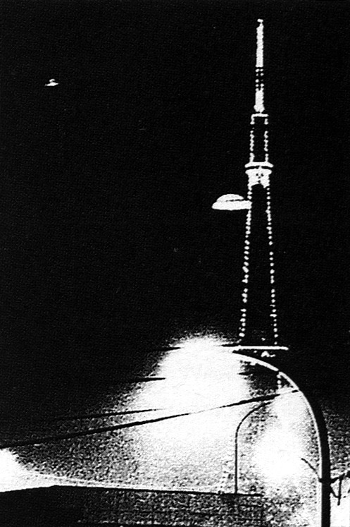

L'ovni photographié à Tokyo le 19. Une explication proposée est qu'il s'agisse du reflet du
lampadaire (en bas à droite), un des fils électriques faisant la séparation avec le "dôme" de la soucoupe
Maillot, Eric: Mystère de l'Est

A Atlanta (Georgie), alors qu'un filment une interview tôt le matin ()
avec 2 patrouilleur d'état qui avaient observé un ovni la nuit précédente, les patrouilleurs et les 3 membres de
l'équipe des actualités de Canal 5 (CBS) remarquèrent 2 lumières brillantes inhabituelles dans le ciel à l'est
"NICAP-APRO
Evaluate UFO Cases for National Enquirer Panel", NICAP UFO Investigator, février 1974.
Jimmy Carter dépose au NICAP son témoignage d'observation d'un ovni .
A Tokyo (Japon) un ovni évoluant près d'un relais de
communication de 333 m de haut est photographié (ci-contre).